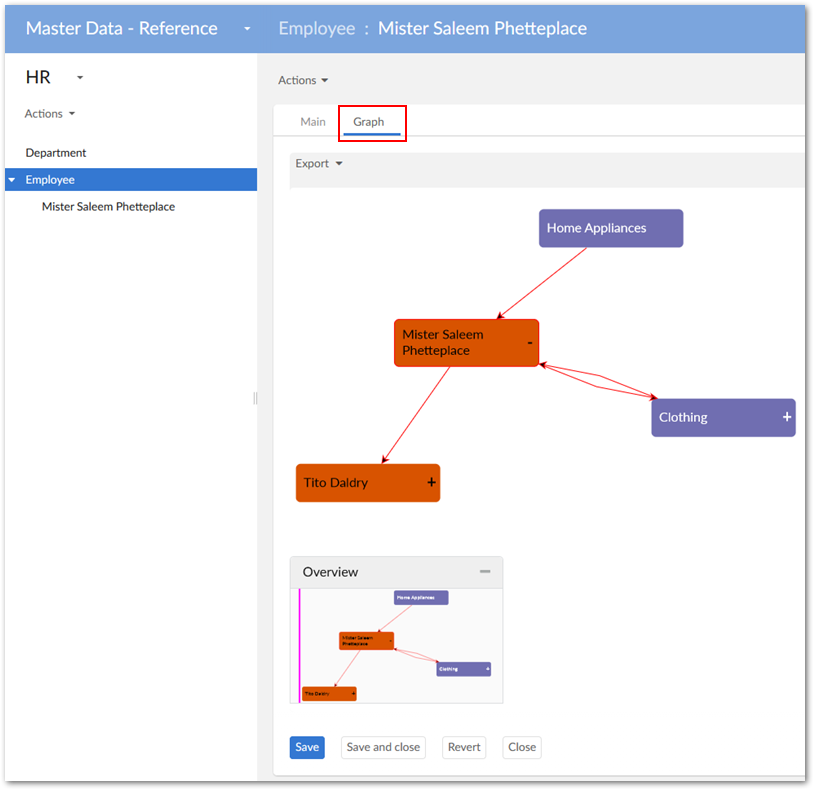

Administrators can enable display of default data value graphs in tabs on EBX® records. When a user opens a record, they are not required to run a service to display a graph. They can simply select the tab and display a graph with the current record in focus.
To display a default data value and relationship graph in a record view tab:
Open the desired data model in the EBX® Data Modeler Assistant (DMA).
Navigate to Configuration > Component library, create a new record, and enter the following:
A name.
In the Configuration field, enter com.orchestranetworks.addon.dmdv.data.ui.GraphDataWithoutConfigUIWidgetFactory and select Save.
On the Parameters tab enable widgetKey and save your progress.
In the Navigation pane, select the table where you want to add the tab and complete the following:
Select the table's Advanced properties tab.
Navigate to Table > Presentation > Default rendering for groups in forms > Enable rendering and select the Enable tabs option.
Save your progress
Add a Group child element to this table. Optionally, you can set the Minimum number of values option to 0. Setting this option prevents validation messages from displaying.
Select the Advanced properties tab and in the Default view and tools group specify the following:
Under Rendering in forms, enable the As tab option.
Under Widget, use the Component tab's drop-down menu to select the widget component created in step 2.
Under Widget, use the Parameters tab to enter the following widgetKey parameter: com.orchestranetworks.addon.dmdv.data.ui.GraphDataWithoutConfigTabUIWidget
Set the Access properties option to Read only.
Save your progress and publish the data model. As shown below, the tab now displays when opening the record.
